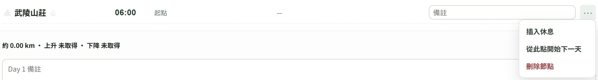
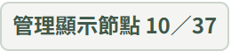
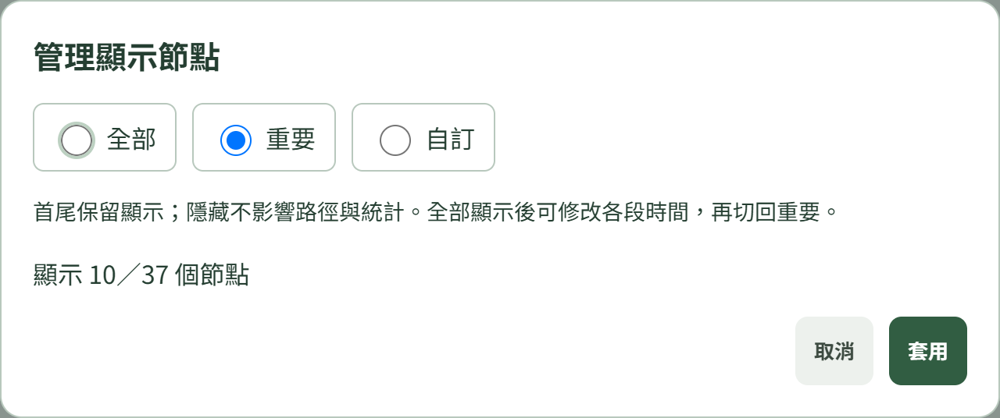
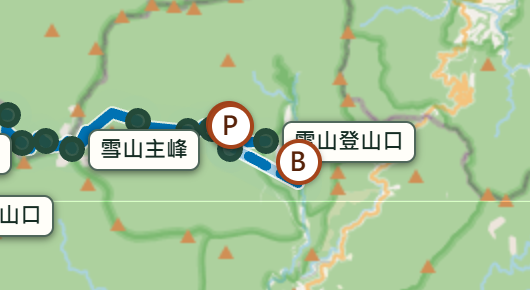

1. 開始規劃
第一步：選擇建立行程的方式。兩種方式都能在完成後分天、修改及保存。
接著可填行程名稱、出發日期與天數；名稱和日期可以留空。
切換來源不會清空行程；上河圖組控制選點範圍，尋路使用已收錄的全域路網。
方式 A：逐點建立行程
選「上河圖組」並選擇圖群組；設定 Day 1 出發時間與預設係數。搜尋或選擇第一個地點，按「加入」作為起點。接著搜尋下一點，或使用「快速加入」。
小地圖表示路網連通，線條並非實際步道；時間不含休息。↩ 表示往上一地點的方向返回。
方式 B：套用經典路線
選「經典路線」，依下圖選路線、確認走法並設定步行係數，最後按「套用路線」。
整條路線先放入 Day 1；已有行程時須確認取代全部 DAY。套用後可復原、分天與修改。
完成基本行程：檢查時間
每日預設係數只用於之後加入的路段；已加入的路段可逐段調整。車行不受步行係數影響。
安排天數、休息與手動點
按行程節點旁的「⋯」開啟選單：

也可用「＋手動起點／終點」新增地點；每一天可分別設定出發時間、係數及「銜接前日」。
部分尚未定位的聚合線形不能從中間點分天；出現提示時請改選有明確線形端點的節點。
檢查與管理顯示節點
每個 DAY 的行程表左上方都有「管理顯示節點」；數字表示目前顯示數與總數。


首尾固定顯示；隱藏不會刪除節點或改變統計。需修改隱藏路段的時間時，先切至「全部」。
查看地圖、剖面與 GPX
基本行程建立後，展開「行程地圖與 GPX」查看線形與每日路線。
空白行程也可匯入 GPX 比較，匯入軌跡不會自動加入行程。匯入後可在地圖右上角圖層選單勾選「匯入 GPX 參考軌跡」切換顯示。圖層可選魯地圖及 Happyman 山友行跡；高程與線形供規劃參考。
需要時：調整地圖路徑
展開地圖，把「路徑編輯模式」切到 ON。直接點選或拖動要修改的線；操作會保存於目前行程，可用「復原」還原。
先認識線與區間
實線表示來源線形或自動路網；虛線表示手動直線。較淡的短虛線是尚需確認的路網接入線。顏色區分 DAY；線的樣式表示連接方式。
一個行程路段可能有多個控制點。點到的線段只代表相鄰行程點或控制點之間的一個區間，小視窗的切換只影響該區間。
點線：切換自動與手動
- 點實線，選「改為手動連接」：該區間改成兩端的手動直線；其他區間保留。
- 點手動虛線，選「嘗試自動連接」：系統搜尋附近連通路網，成功後以路網線形取代該區間。
- 找不到接入或連通路徑時，保留原線形並顯示原因；不會因距離近就強制接上。
拖線：建立控制點

拖動自動線時，通常會產生 P、B、Q：P／Q 是離開與返回原線的位置，B 是拖到的新位置；靠近端點時會沿用端點，因此不一定三點都出現。P→B、B→Q 改為手動虛線，兩側未改動的自動線保留。
拖動手動線時只新增 B，B 兩側仍是手動直線。控制點可拖動或點選刪除；移動後只重算相鄰需要更新的自動區間，手動區間保留手動方式。
控制點與行程點有什麼不同？
控制點只用來調整線形，不會加入行程表。點控制點可選「改為行程點」；也可點線選「加入行程點」。加入後會把原路段拆成前後兩段，保留線形與原時間供參考，但不會自動分配兩段時間，請自行核對填寫。
將自動路段改為手動或加入控制點後，原上河時間會保留作參考；手動時間可能需要另行輸入。切換後請查看行程表的時間提示。
在空白地圖加入行程點，會加到目前選定 DAY 的末端；請檢查與前一點的連接及時間。路徑變更後可按「更新行程 DEM 估算」。完成查看後可切回 OFF；手動線不代表已確認可通行。
復原與重做
按頁面上方「↶ 復原」撤回上一個操作；按「↷ 重做」恢復剛撤回的操作。往下捲動後也可使用浮動工具列。
保存、匯入與分享
行程備份
上方「匯出」保存可再編輯的備份；「匯入」會載入備份並取代目前畫面。
Excel 與文字
可匯出 Excel，或用「複製行程文字」貼到訊息與文件。
手機操作
窄視窗可由右上角「⋯」及下方浮動工具列操作更多功能；地圖可直接觸控拖線。
行程自動暫存在目前瀏覽器；重要行程請另存備份。不同裝置及正式版／Preview 的暫存不會自動同步。
常見問題
找不到想加入的地點？
選「全部已收錄節點」再搜尋；尚未收錄的地點可使用手動點。同名地點請核對圖組與位置。
為什麼時間是空白？
來源可能沒有該方向的參考時間，或此段為手動連接。請核對並填入時間；空白不代表零分鐘。
為什麼距離、高度或 GPX 不完整？
部分點位可能無座標或路段缺少可用線形。地圖與匯出提示會列出缺漏，統計僅計可取得的部分。
切換顯示會刪除隱藏的節點嗎？
不會。只改變行程表可見的節點；完整路線及時間仍保留。
為什麼換裝置後看不到行程？
瀏覽器暫存不會自動跨裝置同步；請先在原裝置匯出行程備份，再到新裝置匯入。
本說明以 v0.10.0 介面為準。資料與地圖供規劃參考，請配合上河原圖及現地資訊核對。